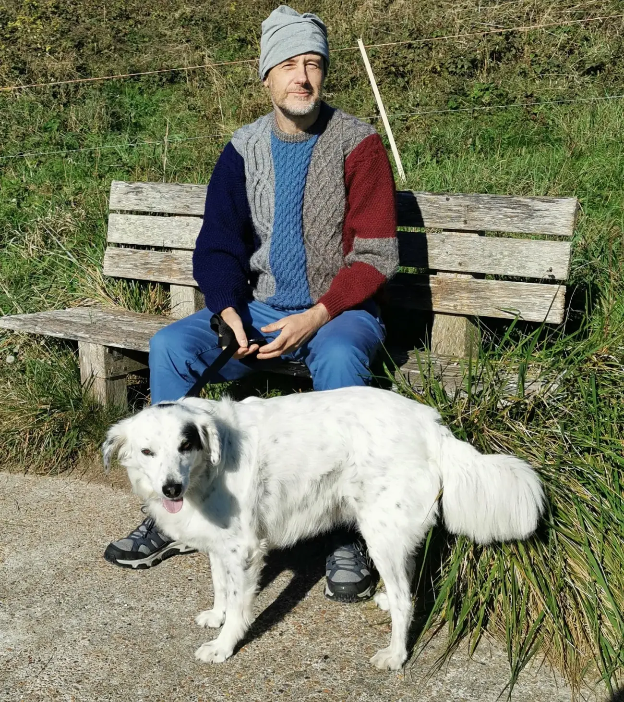

About Me

As you know, I work as a painter. I like a lot of what Brighton has to offer such as the beach, particularly Ovingdean beach. I love walking in the Downs with friends or alone. My home hobby is coding. I love the Gleam programming language and for the past few months I have been working on a (kind of) SM platform.
One reason I live in Brighton at all is for 5 rhythms dance, which has had an incredible positive effect on my life.
I like to sprinkle my life with adventure here and there. Whether it be hiking and wild camping in Jordan or Kent, or finding myself in the Amazon or lost deep in Friston Forest.